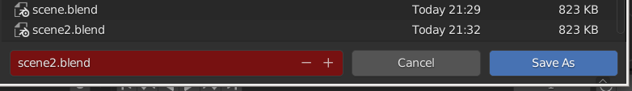
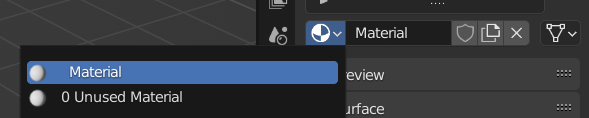
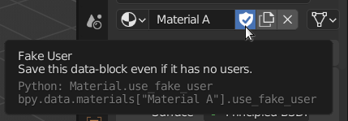
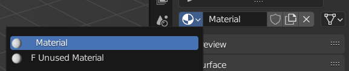

⚠️ Avoiding data loss¶
There are some things to be aware of when working with Blender that might behave a little different from other programs, or general expectations, and that can potentially cause you to loose work.
The file overwrite prompt is very subtle¶
Suppose we have saved our work to a file scene.blend. We then make some more changes in Blender to create a
second version of our scene and save this as scene2.blend. Finally, we make a third version and intend to save
this as scene3.blend, but we forget to change the file name in the save dialog and it stays at the current scene2.blend.
The Blender way of warning you that you are about to overwrite an existing file is really subtle:

Notice the red color behind the file name? That's the signal that the file name you entered is the same as an existing file in the current directory. If we change the file name to something that doesn't exist yet the color becomes gray again:

The File > Save As workflow (and similar for related file dialogs) is a somewhat double-edged sword:
- If you're aware of the above signal and intend to quickly overwrite the current file you can simply press
Enteronce in the dialog, and the file will be saved with no "Overwriting are you sure?" prompt is shown. So in this respect the UI stays out of your way and avoids an extra confirmation dialog. - But if you miss the red prompt or are unaware of its meaning then it's easy to accidentally overwrite existing work.
Easy file versions¶
A nice way to save to successive versions of a file is using the + button right of the file name, as shown in the
pictures above. Using the + (and -) you can easily change the version number at the end of a file name, e.g. scene2.blend
to scene3.blend. The red overwrite indicator will also update depending on the existence of the chosen file name.
Warning
Using the + button merely increments the number in the file name. It does not guarantee that the
file does not exist yet (i.e. no check is made with what's on disk).
Unused data-blocks in the scene are not saved¶
Suppose you have a 3D scene and have created a material A that you use on some object. You then create a material B and assign it to the same object, causing material A to now be unused in the scene. If you save your scene to file at this point material A will not get saved to the file, as it is not referenced by anything in the scene. This automatic "garbage collection" feature of Blender is somewhat controversial, and it is definitely good to be aware of this behaviour.
For most scene elements used in the Basics part of this course garbage-collection-on-save does not really cause concern, except for the case
of Materials (as described in the example above). For materials, and other scene elements, you can see if they are unused by checking for a 0
next to their name when they appear in a list:

The quick fix in case you have a material that is currently not used in the scene, but that you definitely want to have saved to file, is to use the "Fake User" option by clicking the shield icon (be sure to enable this option for the right material!):

You can verify the material now has a fake user as intended by checking for an F next to its name:

Note that you can use the same Fake User option for some other types of scene elements as well.
We have a more detailed discussion of the garbage collection system in a section in the Python scripting reference. The behaviour described relates to the data block system that Blender uses internally and for normal use the description above should be sufficient, but can also be influenced from Python.
Recovering lost work¶
Murphy's Law usually strikes when you least expect it. Fortunately, there are several layers of defense in case something goes unexpectedly wrong when saving files, or in case Blender crashes. It depends on the situation you're trying to recover from which one of the options below provides the best results, if applicable.
Please check what each of these features does, to make sure you don't accidentally make things worse by using one of the recover options within Blender in the wrong way.
Those .blend1 files?¶
You might notice that when you overwrite an existing file, say file.blend, another file called file.blend1 will now
have appeared next to it in the same directory. This is Blender's method for automatically keeping around the previous version of the file you overwrote: it first moves
the existing file.blend to file.blend1, and only then saves the new file.blend.
So if you accidentally overwrite a file you can still get to the previous version (the .blend1 file), as long as you haven't overwritten more than once.
More than 1 previous version
You can actually have multiple previous versions kept around if you like. The preference setting for this is Save & Load > Save Versions,
which defaults to 1. If you would increase it then files with extensions .blend2, .blend3 and so on would be kept around.
Auto save¶
By default, Blender will automatically save your current scene to a file in a temporary directory every few minutes (2 minutes by default). The settings
that control this are Save & Load > Auto Save and Save & Load > Auto Save > Timer (Minutes).
This auto-save file is stored in your system's
temporary directory, and uses the process ID of Blender in the file name, as well as the string _autosave. Here is an example
from a Linux system, where /tmp is used and Blender's process ID is 66597:
melis@juggle 22:13:/tmp$ ps aux | grep blender
melis 66597 1.2 5.7 1838680 463920 ? Sl 21:54 0:14 blender
melis@juggle 22:13:/tmp$ ls 66597*
66597_autosave.blend
See this section of the Blender manual on recovering a session from an auto-save file from the File manual (you can also copy or load the
file manually, of course, there is nothing special about it).
Edit mode data not saved
If you happend to be in edit (or sculpt) mode at the time Blender does an auto-save, then the current updated state of the mesh will not get saved. This is a limitation of the auto-save feature.
Last session (accidental quit without saving)¶
Whenever Blender quits normally (i.e. not a crash) it will save the current session state to a file called quit.blend in your system's temporary directory.
You can easily load this file with the File > Recover > Last Session option (or copy it to a different location and load it as any Blender file).
One of the cases where this feature might come in handy is if you quit Blender, have unsaved changed, but accidentally click the Don't Save button in the
Save changes before closing? dialog. The quit.blend file in this case will contain those unsaved changes. But be sure to make a copy of it before quitting Blender again, as that will overwrite it.
Info
Note that there currently is no option to disable this Save-on-Quit feature. So for large scenes this will incur a (usually short) delay when exiting.
Blender crash¶
In case Blender crashes it usually does not manage to save the current scene to a recovery file. So in this case you are hopefully able to recover any lost work using the data available saved through the features described above.